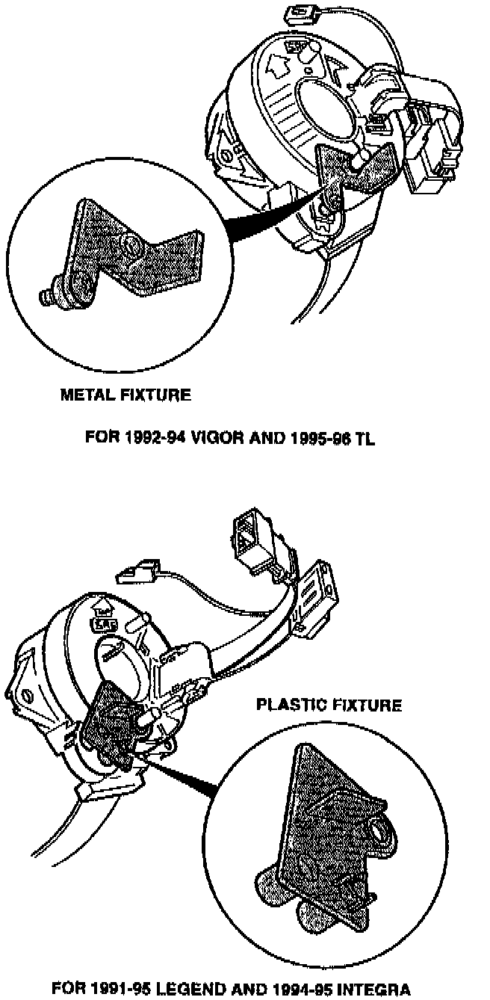

SRS - Cable Reel Holding Fixture
July 18, 1995BULLET1N NO.
95-010
YEAR
1991-95
1994-95
1992-94
1995-96
MODEL
LEGEND
INTEGRA
VIGOR
TL
VIN APPLICATION
ALL WITH SRS
Cable Reel Holding Fixture
BACKGROUND
When an SRS cable reel assembly is removed and set aside during vehicle repairs, the cable reel may rotate inside the assembly so it is no longer centered. If the assembly is reinstalled with the reel off-center, the cable can break when the steering is turned to full lock. The cable reel holding fixture locks the reel while the assembly is off the vehicle, keeping it centered for reinstallation.
CABLE REEL REMOVAL PROCEDURE
1. Follow the procedure in the appropriate service manual for disconnecting the battery, and removing the dashboard panels, steering column covers, airbag, and steering wheel.
^ Always install short connectors on the connectors for the driver's and passenger's (if so equipped) airbags.
^ Make sure the front wheels are pointed straight ahead before removing the steering wheel.

2. Verify that the cable reel is centered; the yellow geartooth is lined up with the alignment mark on the cover. Install the cable reel holding fixture in the cable reel assembly as shown. Use a Torx T-10 wrench.
3. Disconnect the 6-P connector, then remove the cable reel assembly.
CABLE REEL INSTALLATION PROCEDURE
1. Verify that the front wheels are still pointed straight ahead.
2. Reinstall the cable reel assembly, and reconnect the 6-P connector.
3. Remove the cable reel holding fixture.
4. Follow the service manual procedure for reinstallation of the steering wheel, airbag, steering column covers, and dashboard covers.
5. Verify SRS operation as described in the service manual. Road test the vehicle.
^ If the steering wheel spoke angle is not correct, change it by adjusting the tie rod ends. Do not remove and reposition the steering wheel.
PARTS INFORMATION
Cable reel holding fixture:
For 1991-95 Legend and 1994-95 Integra
P/N 77900-SPO-999
For 1992-94 Vigor and 1995-96 TL
P/N 77900-SM5-999
WARRANTY CLAIM INFORMATION
Use the Flat Rate Manual information for the repair being performed.